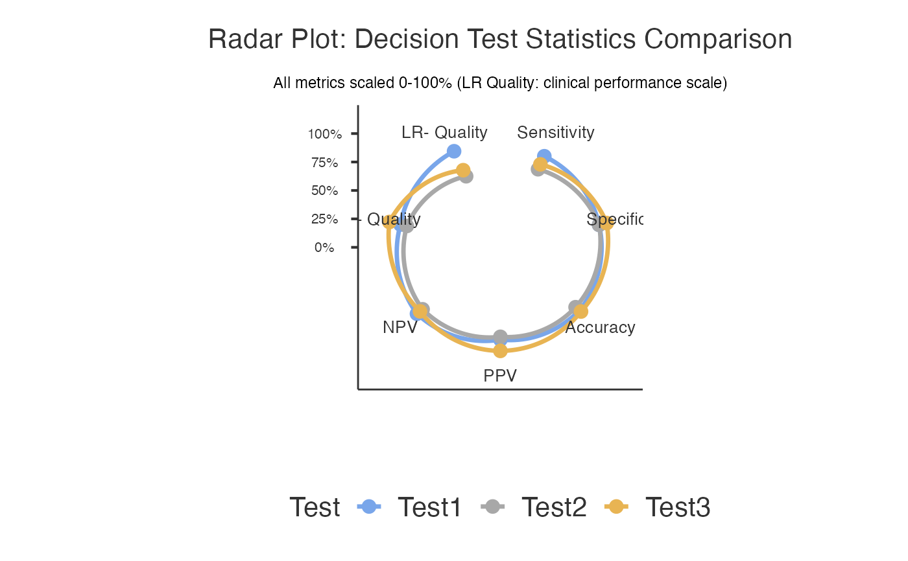

Dataset with 180 patients comparing three tests with complementary characteristics: high sensitivity (0.90), balanced (0.85/0.88), and high specificity (0.78/0.92).
Format
A data frame with 180 rows and 5 variables:
- patient_id
Character: Patient identifier (PT001-PT180)
- GoldStandard
Factor: True disease status ("Negative", "Positive"), 35% prevalence
- Test1
Factor: High sensitivity test ("Negative", "Positive"), Sens=0.90, Spec=0.85
- Test2
Factor: Balanced test ("Negative", "Positive"), Sens=0.85, Spec=0.88
- Test3
Factor: High specificity test ("Negative", "Positive"), Sens=0.78, Spec=0.92
- test_site
Factor: Testing site (Site_A, Site_B, Site_C)
Details
Demonstrates three-way comparison with complementary test characteristics. Ideal for radar plot visualization and comprehensive test evaluation.
Examples
data(decisioncompare_threetest)
decisioncompare(data = decisioncompare_threetest, gold = "GoldStandard",
goldPositive = "Positive", test1 = "Test1",
test1Positive = "Positive", test2 = "Test2",
test2Positive = "Positive", test3 = "Test3",
test3Positive = "Positive", radarplot = TRUE)
#>
#> COMPARE MEDICAL DECISION TESTS
#>
#> character(0)
#>
#> Test 1 - Recoded Data
#> ────────────────────────────────────────────────────────────────
#> Gold Positive Gold Negative Total
#> ────────────────────────────────────────────────────────────────
#> Test Positive 56.000000 13.00000 69.00000
#> Test Negative 7.000000 104.00000 111.00000
#> Total 63.000000 117.00000 180.00000
#> ────────────────────────────────────────────────────────────────
#>
#>
#> Test 2 - Recoded Data
#> ────────────────────────────────────────────────────────────────
#> Gold Positive Gold Negative Total
#> ────────────────────────────────────────────────────────────────
#> Test Positive 48.00000 13.00000 61.00000
#> Test Negative 15.00000 104.00000 119.00000
#> Total 63.00000 117.00000 180.00000
#> ────────────────────────────────────────────────────────────────
#>
#>
#> Test 3 - Recoded Data
#> ────────────────────────────────────────────────────────────────
#> Gold Positive Gold Negative Total
#> ────────────────────────────────────────────────────────────────
#> Test Positive 51.00000 5.000000 56.00000
#> Test Negative 12.00000 112.000000 124.00000
#> Total 63.00000 117.000000 180.00000
#> ────────────────────────────────────────────────────────────────
#>
#>
#> Decision Test Comparison
#> ─────────────────────────────────────────────────────────────────────────────────────────────────────────────────────────────────────────────────────────────────────────────────────────────────────────────────────────────────────────────────────────────────
#> Test Sensitivity Specificity Accuracy Positive Predictive Value Negative Predictive Value Positive Likelihood Ratio Negative Likelihood Ratio
#> ─────────────────────────────────────────────────────────────────────────────────────────────────────────────────────────────────────────────────────────────────────────────────────────────────────────────────────────────────────────────────────────────────
#> Test1 88.88889 88.88889 88.88889 81.15942 93.69369 8.000000 0.1250000
#> → Good balanced performance; Moderate positive evidence; Moderate negative evidence
#> Test2 76.19048 88.88889 84.44444 78.68852 87.39496 6.857143 0.2678571
#> → Good specificity for confirmation; Moderate positive evidence
#> Test3 80.95238 95.72650 90.55556 91.07143 90.32258 18.942857 0.1989796
#> → Excellent for confirmation (rule-in); Strong positive evidence; Moderate negative evidence
#> ─────────────────────────────────────────────────────────────────────────────────────────────────────────────────────────────────────────────────────────────────────────────────────────────────────────────────────────────────────────────────────────────────
#>
#>
#> <div style="font-family: Arial, sans-serif; max-width: 800px; margin:
#> 0 auto; padding: 20px;"><h2 style="color: #2c3e50; border-bottom: 2px
#> solid #3498db;">📋 Clinical Summary
#>
#> Among the tests evaluated, Test3 demonstrated optimal diagnostic
#> performance with 81% sensitivity (95% CI: [see confidence interval
#> table]), 95.7% specificity (95% CI: [see confidence interval table]),
#> 91.1% positive predictive value, 90.3% negative predictive value, and
#> 90.6% overall accuracy. The likelihood ratio for positive results was
#> 18.94 and for negative results was 0.20.<h3 style="color: #27ae60;
#> margin-top: 30px;">📝 Report Sentences
#>
#> <div style="background-color: #f8f9fa; padding: 15px; border-left: 4px
#> solid #28a745; margin: 15px 0;"><h4 style="margin-top: 0;">Methods
#> Section:
#>
#> <p style="font-style: italic; line-height: 1.6;">We compared the
#> diagnostic performance of 3 tests (Test1, Test2, Test3) against the
#> gold standard reference using diagnostic accuracy analysis. The study
#> included 180 cases with complete data. Performance metrics calculated
#> included sensitivity, specificity, positive and negative predictive
#> values, likelihood ratios, and overall accuracy.
#>
#> <div style="background-color: #e8f4f8; padding: 15px; border-left: 4px
#> solid #3498db; margin: 15px 0;"><h4 style="margin-top: 0;">Results
#> Section:
#>
#> <p style="font-style: italic; line-height: 1.6;">Among the tests
#> evaluated, Test3 demonstrated optimal diagnostic performance with 81%
#> sensitivity (95% CI: [see confidence interval table]), 95.7%
#> specificity (95% CI: [see confidence interval table]), 91.1% positive
#> predictive value, 90.3% negative predictive value, and 90.6% overall
#> accuracy. The likelihood ratio for positive results was 18.94 and for
#> negative results was 0.20.
#>
#> <h3 style="color: #8e44ad; margin-top: 30px;">💡 Clinical
#> Recommendations
#>
#> <div style="background-color: #fff3cd; padding: 15px; border-radius:
#> 8px;">
#>
#> Confirmatory Application: Test3 is excellent for confirming diagnosis
#> due to high specificity (low false positive rate).
#>
#> Implementation Note: Results should be interpreted in the context of
#> disease prevalence in your clinical population. Consider local
#> validation studies before implementation.
#>
#> <div style="font-family: Arial, sans-serif; max-width: 900px; margin:
#> 0 auto; padding: 20px;"><h2 style="color: #2c3e50; text-align: center;
#> border-bottom: 2px solid #3498db; padding-bottom: 10px;">🔬 About
#> Medical Decision Test Comparison
#>
#> <div style="background: linear-gradient(135deg, #e3f2fd 0%, #bbdefb
#> 100%); padding: 20px; border-radius: 10px; margin: 20px 0;"><h3
#> style="color: #1565c0; margin-top: 0;">📊 What This Analysis Does
#>
#> <p style="line-height: 1.6; color: #333;">This tool compares the
#> diagnostic performance of multiple medical tests against a gold
#> standard reference. It systematically evaluates sensitivity,
#> specificity, predictive values, likelihood ratios, and overall
#> accuracy to help you determine which test performs best for your
#> clinical scenario.
#>
#> <div style="background-color: #f1f8e9; border: 1px solid #8bc34a;
#> padding: 20px; border-radius: 8px; margin: 20px 0;"><h3 style="color:
#> #4a7c59; margin-top: 0;">🎯 When to Use This Analysis
#>
#> <ul style="line-height: 1.8; color: #4a7c59;">Test Validation:
#> Comparing new diagnostic methods against established standardsMethod
#> Comparison: Evaluating which of several tests performs betterClinical
#> Research: Validating biomarkers, imaging techniques, or clinical
#> assessmentsQuality Assessment: Measuring agreement between different
#> raters or methodsProtocol Development: Optimizing diagnostic
#> workflows<div style="background-color: #fff3e0; border: 1px solid
#> #ff9800; padding: 20px; border-radius: 8px; margin: 20px 0;"><h3
#> style="color: #e65100; margin-top: 0;">📝 How to Use This Analysis
#>
#> <ol style="line-height: 1.8; color: #e65100;">Select Gold Standard:
#> Choose your most reliable reference test (e.g., biopsy, expert
#> consensus)Choose Tests to Compare: Select 2-3 diagnostic tests you
#> want to evaluateDefine Positive Levels: Specify what constitutes a
#> "positive" result for each testConfigure Options: Enable statistical
#> comparisons, confidence intervals, or visualizations as neededRun
#> Analysis: Review results tables and clinical interpretationsCopy
#> Report: Use the auto-generated sentences for your documentation<div
#> style="background-color: #f3e5f5; border: 1px solid #9c27b0; padding:
#> 20px; border-radius: 8px; margin: 20px 0;"><h3 style="color: #6a1b9a;
#> margin-top: 0;">📈 Key Metrics Explained
#>
#> <div style="display: grid; grid-template-columns: 1fr 1fr; gap: 15px;
#> color: #6a1b9a;">
#>
#> Sensitivity: Probability test is positive when disease present
#> (rule-out ability)
#>
#> Specificity: Probability test is negative when disease absent (rule-in
#> ability)
#>
#> PPV: Probability of disease when test positive
#>
#> NPV: Probability of no disease when test negative
#>
#> LR+: How much positive test increases odds of disease
#>
#> LR-: How much negative test decreases odds of disease
#>
#> Accuracy: Overall probability of correct classification
#>
#> McNemar Test: Statistical comparison between paired tests
#>
#> <div style="background-color: #e8f5e8; border: 1px solid #4caf50;
#> padding: 20px; border-radius: 8px; margin: 20px 0;"><h3 style="color:
#> #2e7d32; margin-top: 0;">⚕️ Clinical Interpretation Guidelines
#>
#> <div style="display: grid; grid-template-columns: 1fr 1fr; gap: 15px;
#> color: #2e7d32;"><h4 style="margin-bottom: 5px;">Screening Tests
#> (Rule-Out):
#>
#> <p style="margin-top: 0;">• Sensitivity ≥95%: Excellent
#> • NPV ≥95%: High confidence
#> • Goal: Minimize false negatives
#>
#> <h4 style="margin-bottom: 5px;">Confirmatory Tests (Rule-In):
#>
#> <p style="margin-top: 0;">• Specificity ≥95%: Excellent
#> • PPV ≥90%: High confidence
#> • Goal: Minimize false positives
#>
#> <div style="background-color: #fff8e1; border: 1px solid #ffc107;
#> padding: 20px; border-radius: 8px; margin: 20px 0;"><h3 style="color:
#> #f57f17; margin-top: 0;">⚠️ Important Assumptions & Limitations
#>
#> <ul style="line-height: 1.6; color: #f57f17;">Gold Standard: Assumes
#> your reference test is truly accurateSample Size: Results more
#> reliable with larger, representative samplesPrevalence Dependency: PPV
#> and NPV vary with disease prevalenceMcNemar Test: Requires
#> paired/matched data for statistical comparisonsMissing Data: Cases
#> with incomplete data are excluded from analysisConfidence Intervals:
#> Calculated using Wilson method for better accuracy
#>
#> <div style='margin: 10px 0;'><div style='background-color: #eff6ff;
#> border-left: 4px solid #93c5fd; padding: 12px; margin: 8px 0;
#> border-radius: 4px;'><strong style='color: #2563eb;'>ℹ️ Analysis
#> Completed Successfully
#> <span style='color: #374151;'>3 diagnostic tests compared using 180
#> complete cases. Gold standard identified 63 diseased and 117 healthy
#> cases. Review comparison tables and statistical tests below.
